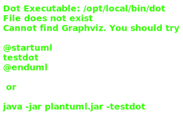

Hierarchy-Diagram
{kind=link}
Legend
 class
class
 public property
public property
 protected property
protected property
 private property
private property
 public method
public method
 protected method
protected method
 private method
private method
Hierarchy
- DBManager<IFileMetadata>
- Filedata
Index
Constructors
Properties
Methods
- convertIDtoKEY
- create
- debug
Routes - delete
- delete
File - delete
Lost Files - error
- for
Each Foreign Key - get
FromDB - get
Static Url - internal
- parse
Query - prepare
Document For Upload - query
Length With Filter - read
- read
Latest - read
Source - reference
Field In Doc - resolve
Dependencies - run
Query - run
Query With Filter - update
- update
Each Field - update
Foreign Keys - write
File
Constructors
constructor
Builds a DB Manager.
Returns Filedata
Properties
Protected Optional build
Type declaration
Accepts a non id/key string and converts it into a valid document
Parameters
user: AuthUser
files: any
str: string
par: string
Returns Promise<IFileMetadata>
class
db
Raw collection wrapper
Protected field
Type declaration
[key: string]: IFieldData
Protected field
Pair array of the field entries
Protected foreign
Pair array of foreign entries
Protected has
True if this type has a createdAt field that should be managed
Protected has
True if this type has an updatedAt field that should be managed
Protected Optional modify
Type declaration
Modifies a doc, if required. Called before verifying any fields.
Parameters
user: AuthUser
files: any
doc: any
Returns Promise<IFileMetadata>
Protected parent
Parent field data
Methods
convertIDtoKEY
Called by GET-ALL and GET-ID requests. Converts all
IDs in the document intoKEYs for presentation on the frontend.Parameters
user: AuthUser
doc: IFileMetadata
Returns Promise<IFileMetadata>
The updated document
create
Create a new document and return its
ID. Performs input validation and accepts a mix of existing documents (asKEYorID) or new documents (if allowed by the field data).Parameters
user: AuthUser
The user that created the document
files: any
Any files with the request
d: IFileMetadata
The document to create
Returns Promise<string>
The new document's
ID
debug
Attach debugging routes. Defaults to /orphan and /disown.
Parameters
r: Router<DefaultState, DefaultContext>
Returns void
delete
Deletes a document and all its associated documents. This does not update parent documents.
Parameters
user: AuthUser
id: string
Returns Promise<void>
delete
Delete a file from the filesystem.
Parameters
user: AuthUser
The user for the request
pathTo: string
The path string on disk. Read from the file metadata.
Returns Promise<void>
delete
Deletes all files that no longer have any file revisions associated with them.
Returns Promise<ArrayCursor<any>>
error
Creates a standard error.
Parameters
fn: string
The function that caused the error
status: HTTPStatus
The status code
Optional message: string
Client-safe error message
Optional verbose: string
Full error message for administrators
Returns APIError
An APIError
Protected for
Runs the callbacks on each foreign key in the document.
Parameters
doc: IFileMetadata
The document to loop through
keyCall: (pointer: PTR<any>, obj: any, data: IForeignFieldData) => Promise<any>
Runs for each foreign key
Parameters
pointer: PTR<any>
obj: any
data: IForeignFieldData
Returns Promise<any>
arrCall: (pointer: PTR<any>, arr: any[], data: IForeignFieldData) => Promise<any>
Runs for each foreign array
Parameters
pointer: PTR<any>
arr: any[]
data: IForeignFieldData
Returns Promise<any>
stpCall: (pointer: PTR<any>, stp: IStepper<any>, data: IForeignFieldData) => Promise<any>
Runs for each foreign step object
Parameters
pointer: PTR<any>
stp: IStepper<any>
data: IForeignFieldData
Returns Promise<any>
Optional skippable: (data: IForeignFieldData) => boolean
Returns
trueif this key can be skippedParameters
data: IForeignFieldData
Returns boolean
Returns Promise<IFileMetadata>
get
Gets the document with the passed key from the database. Performs dereferencing on its fields.
Parameters
user: AuthUser
id: string
noDeref: boolean
userRoute: boolean
Returns Promise<IFileMetadata>
A Type representing a document with key, with .id set and ._* removed
get
Gets a static url to the given file.
Parameters
file: { id?: string; title: string }
A FileData-like string
Optional id?: string
title: string
Returns string
A URL string
internal
Creates a internal error. Uses a static client-safe message.
Parameters
fn: string
The function that caused the error
Optional verbose: string
Full error message for administrators
Returns APIError
An APIError
parse
Converts a URL query into a more useful format. Also validates filtering and sorting fields.
Parameters
q: any
The query string to parse
Returns IQueryOpts
The query options
Protected prepare
Converts a document of mixed objects and foreign keys into a database-safe object, ready for uploading. The final document (and any necessary sub documents) are added to
map, so all documents can be added to the database at the same time. This avoids issues where an error during parsing would leave documents half-uploaded.This process is very expensive, especially for Projects, mostly due to the inefficiencies of the process due to keeping it generic. Thankfully, this is only used on administrative routes, where mixed data is allowed.
Parameters
user: AuthUser
The user that started the upload
files: any
Any files with the upload
doc: IFileMetadata
The document to prepare
exists: boolean
True if this document exists in the database
map: Map<DataManager<any>, any[]>
The map to add all documents to
lastDBId: string
The last valid database
ID. Used for setting parent fields of sub-ojects.
Returns Promise<IFileMetadata>
doc, but with all foreign keys as
IDs
query
Retrieves the number of documents returned by the passed query, with additional filters.
Parameters
q: any
The query object
Rest ...filters: IFilterOpts[]
Additional filters to use
Returns Promise<number>
The number of documents in the query
read
Reads a file from its
ID.Parameters
user: AuthUser
The user for the request
id: string
A file database
ID
Returns Promise<string>
A path to return the string with
read
Reads the latest file path.
Parameters
user: AuthUser
The user for the request
doc: IFileRevisions
The revisions file
Returns Promise<string>
A path to return the string with
read
Converts a
pathTovariable into a full path.Parameters
user: AuthUser
The user for the request
pathTo: string
The base path
Returns Promise<string>
A full path variable
Protected reference
Converts a passed object or string into an
IDfor the manager referenced by data or into a parsed object if it isn't a database object.Sets parent fields and converts strings into new documents.
Parameters
user: AuthUser
The user of the request
files: any
Any files with the request
doc: any
The document to convert
data: IFieldData
The field data associated with where this sub-document came from
map: Map<DataManager<any>, any[]>
The create/update map
par: string
The parent of this document's
ID
Returns Promise<any>
resolve
Dependency resolver. Resolves
data.managerNameinto a reference to the manager.Returns void
run
Retrieves a query from the server, following the passed parameters.
Parameters
user: AuthUser
The user that ran the query
opts: IQueryOpts
The query options
Returns Promise<IQueryRange>
The query's return values and metadata
run
Runs a query with additional filters not in the query string.
Parameters
user: AuthUser
The user that performed the query
q: any
The query object
Rest ...filters: IFilterOpts[]
Additional filters to use
Returns Promise<IQueryRange>
The query's return values and metadata
update
Updates an existing document with new fields as specified.
Parameters
user: AuthUser
The user that updated the document
files: any
Any files associated with the request
id: string
The
IDof the document to updatedoc: IFileMetadata
The update document
Returns Promise<void>
Protected update
Maps each field in the object through a callback function and sets its value to the return type. Modifies all values in-place.
Parameters
doc: any
Optional allFn: (pointer: PTR<any>, data: IFieldData) => Promise<boolean>
Runs for all keys. Returns true if this key should be skipped
Parameters
pointer: PTR<any>
data: IFieldData
Returns Promise<boolean>
Optional foreignFn: (value: any, data: IForeignFieldData) => Promise<any>
Runs for each foreign key
Parameters
value: any
data: IForeignFieldData
Returns Promise<any>
Optional dataFn: (value: any, data: IDataFieldData) => Promise<any>
Runs for each data key
Parameters
value: any
data: IDataFieldData
Returns Promise<any>
Optional otherFn: (value: any, data: IFieldData) => Promise<any>
Runs for each other key
Parameters
value: any
data: IFieldData
Returns Promise<any>
Optional parentFn: (value: any, data: IFieldData) => Promise<any>
Runs for parent keys
Parameters
value: any
data: IFieldData
Returns Promise<any>
Returns Promise<any>
update
Runs the passed function on each foreign key in the document.
Parameters
doc: IFileMetadata
The document to iterate through
fn: (value: any, data: IForeignFieldData) => Promise<any>
The function to call on each key
Parameters
value: any
data: IForeignFieldData
Returns Promise<any>
Optional skippable: (data: IForeignFieldData) => boolean
A function that returns
trueif a key should be skipped.Parameters
data: IForeignFieldData
Returns boolean
Returns Promise<IFileMetadata>
write
Write a new file from the file data. Also writes it to the disk.
Parameters
Returns Promise<IFileMetadata>
The file metadata object
Filedata. Stores where a file is located and its static path URL.